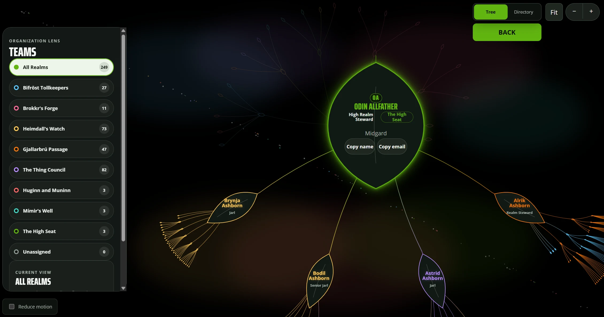

[Problem] What the org used before this existed, and what specifically didn't work about it — the gap Ygradisil was built to close.
[Process] The core information-architecture decisions: tree view vs. directory view, individual vs. team framing, how search fits in. Pick two or three concrete calls and explain what was chosen and why.
[Outcome] What shipped, who uses it day to day, and what's still rough.
Built with AI-assisted development. Live internally; not publicly deployed.